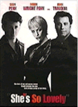
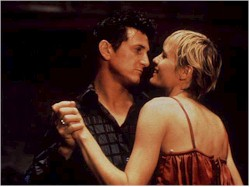
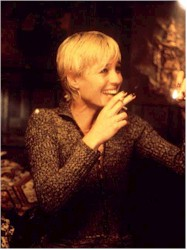

Contents | Features | Reviews | News | Archives | Store |
 |
|
| Movie Credits | Buy It! |
She's So Lovely
Review by Eddie Cockrell
Posted 29 August 1997
|  | Directed by Nick Cassavetes Starring Sean Penn, Robin Wright Penn, Screenplay by John Cassavetes |
A bracing return to the glory years of a very specific strain of American independent filmmaking from the 1960s and 1970s, this second directorial effort from Nick Cassavetes (Unhook the Stars) is marked by his funky yet reverent realization of a two decade old script by his father John as well as uniformly brassy and spectacular acting. Although the film is heavy going for the uninitiated, those new to the Cassavetes worldview are advised to stick with it: there's never a dull moment in this raucous, combustible, uneven but ultimately thrilling meditation on love and madness.
In the dingy corridors of an archetypical urban flophouse, a lean, wobbly bottle blond weaves from her door to the payphone and back again. This is Maureen (Robin Wright Penn) pregnant and distraught over the disappearance of her short-tempered, lowlife husband Eddie (Sean Penn). To fill the time until he comes back, Maureen has some laughs in the local bar with their hulking neighbor Kiefer (James Gandolfini), an adventure that ends in him beating her up when she won't put out. Eddie comes back, and since these kids, warts and all, are crazy in love, crazy in love, she delays telling him as long as possible. Once he figures it out he goes crazy — really crazy — and is put away in a mental institution.
Ten years later, Maureen's a brunette housewife married to the equally volatile Joey (John Travolta). Their suburban veneer succeeds in masking their willful tempers from their three daughters, the oldest of which, Jeanie (Kelsey Mulrooney), is Eddie's.
Thinking he's only been gone for three months and still crazy in love with Maureen (but maybe not so crazy crazy anymore), the meek and newly-sprung Eddie visits a hair salon (in the film's oddest sequence), emerging with blond locks to square off with Joey over custody of Maureen, who isn't as torn over her choice as one might think.
Loving, fighting, smoking, drinking, living: these are the parameters of the unique movie universe of John Cassavetes, the strong-willed and iconoclastic American independent filmmaker (Husbands, A Woman Under the Influence) and actor (The Dirty Dozen, Rosemary's Baby) whose heady mixture of Method and cinéma veritÅ served to forge a completely unique style of acting and directing that sprung from the same well as the work of Jean-Luc Godard, Andy Warhol, and Jacques Rivette and provided key inspiration to Robert Altman, Ken Loach, Martin Scorsese and other then-young and independent-minded filmmakers.
Cassavetes' films are also about family, the often exasperating interactions among lovers, siblings and spouses who are often clogged with equally inarticulate reservoirs of love and rage. In that respect, She's So Lovely fits right in to the ouevre: Eddie and Maureen's barfly pals are as privy to the protracted arguments and reconciliations as the married couple themselves, and there's never much thought given to permanent separation: "when you mess someone up," goes one line of the film's seductive gutter poetry, "you mess 'em up for life."
Each and every performance sings with the raw energy of a downed power line, flopping
and sputtering and just daring you to make a connection (this swollen prose is indicative
of how the movie makes you think). Penn's volcanic performance — hiding beneath a
fragile dome one moment, suddenly venting steam and erupting the next — earned him
the Best Actor award at this year's Cannes festival, and the honor is well-deserved.  For a guy who pops up once
or twice a year to announce he's not acting anymore, Penn has put together a string of
performances that are, taken individually, often inscrutable. But put together they speak
eloquently of a channeled rage and a desire to be something more — more responsible,
more articulate, more anything — that seems to mirror the actor's stormy and often
very public life. Coming on the heels of his Oscar-nominated performance in Dead Man
Walking, his almost mystical turn in the still-to-be-released Hugo Pool (the
genial return of beloved cult director Robert Downey, Sr.) and his hard-nosed, knowing
direction of the tragically misunderstood The Crossing Guard — the best film
of 1995 — and in that anticipatory period just before David Fincher's The Game
and Oliver Stone's U-Turn are unveiled (Telluride audiences will see the latter
this weekend), Penn is at once as ubiquitous in and as palatable to an often suspicious
Hollywood as he's ever been. Couple that with the charming but exasperating mixture of
naivete and worldliness he presents to writer Scott Raab in the September issue of GQ
(imitations of his good friend Marlon Brando, ruminations on the "little marble in
his head") and it's clear that Eddie is a character close to Penn's heart. So close,
in fact, that the young Penn promised Cassavetes pere that he'd one day play the
part.
For a guy who pops up once
or twice a year to announce he's not acting anymore, Penn has put together a string of
performances that are, taken individually, often inscrutable. But put together they speak
eloquently of a channeled rage and a desire to be something more — more responsible,
more articulate, more anything — that seems to mirror the actor's stormy and often
very public life. Coming on the heels of his Oscar-nominated performance in Dead Man
Walking, his almost mystical turn in the still-to-be-released Hugo Pool (the
genial return of beloved cult director Robert Downey, Sr.) and his hard-nosed, knowing
direction of the tragically misunderstood The Crossing Guard — the best film
of 1995 — and in that anticipatory period just before David Fincher's The Game
and Oliver Stone's U-Turn are unveiled (Telluride audiences will see the latter
this weekend), Penn is at once as ubiquitous in and as palatable to an often suspicious
Hollywood as he's ever been. Couple that with the charming but exasperating mixture of
naivete and worldliness he presents to writer Scott Raab in the September issue of GQ
(imitations of his good friend Marlon Brando, ruminations on the "little marble in
his head") and it's clear that Eddie is a character close to Penn's heart. So close,
in fact, that the young Penn promised Cassavetes pere that he'd one day play the
part.
Robin Wright Penn's performance has the same raw fearlessness as her overlooked but powerful turn opposite Tom Hanks in Forrest Gump, and the real-life mutual attraction between the couple is a mystery no longer. Travolta might overstay his welcome as the unstable tough guy whose charm is controlled by some spiritual spigot, but until that happens he's smart enough to take roles like the hair-trigger Joey — who doesn't even show up until the second half of the film but provides a formidable foil for Eddie's stubborn scheme. And its a pure pleasure to see the great Harry Dean Stanton at the top of his game once again as Eddie's droll sidekick Shorty, who gets the movie's funniest line ("Hey Joey, we came for dinner, whattaya pullin' a piece for, it's not that kind of an evening") during the comical climactic showdown between the battling daddies. Unfortunately for it's commercial chances, the movie doesn't seem to have a third act and just sort of stops, leaving a lot of issues unresolved. This, too, is a Cassavetes strategy, as the script reflects the unpredictable cadences and unexpected (and largely unexplainable) truces of life its own bad self.
Twenty years ago, Cassavete's would've taken on Eddie's inconsistencies with relish, the gleam in his eye and smirk in his smile at once seducing and maddening to his loved ones. Come to think of it, his wife Gena Rowlands (star of son Nick's Unhook the Stars and a prison psychologist here) could've played Maureen, with regulars Peter Falk, Ben Gazzara and Seymour Cassel essaying the other lead roles. There aren't many published photos of Cassavetes pere at work, but one of the most evocative is a shot of the director in a recording studio with Charles Mingus, hands stretched skyward, eyes and mouth wide open, reacting in obvious ecstasy to the musician's score for his debut film Shadows (1960). One would like to think that Nick had as much fun making She's So Lovely.
A brief warning about the television trailer for the film: Joseph Vitarelli's score is quite good and the songs chosen by Music Supervisor Amanda Scheer Demme are at once clever and discreetly complimentary (Bjork's "It's Oh So Quiet" over the opening credits is a stroke of pure genius), but the trailer's music bed, Third Eye Blind's "Semi-Charmed Life," is not in the film — although the riffing white boy raps of songwriter Stephan Jenkins provide a perhaps unintentional stylistic link to the film's rhythm. Nevertheless, the annoyingly edited trailer portrays this as some sort of Labor Day weekend feel-good comedy — and while that may lure people in short-term, it creates an artificial reputation for the film that is patently false (the same stunt was pulled with Muriel's Wedding, surprising those who remembered the hype and rented the tape based on that).
A lot of people think that what's missing from movies today is a distinctive storytelling voice, a worldview unfiltered by the suits and committees responsible for a large percentage of the entertainment out there. A bracing antidote to that blandness, She's So Lovely is at once exasperating and mesmerizing, a truly independent vision in a world of increasingly calculated art and the best gift a son could ever give to a father whose legend looms large and whose formidable talents are missed more each day.
Contents | Features | Reviews | News | Archives | Store
Copyright © 1999 by Nitrate Productions, Inc. All Rights Reserved.